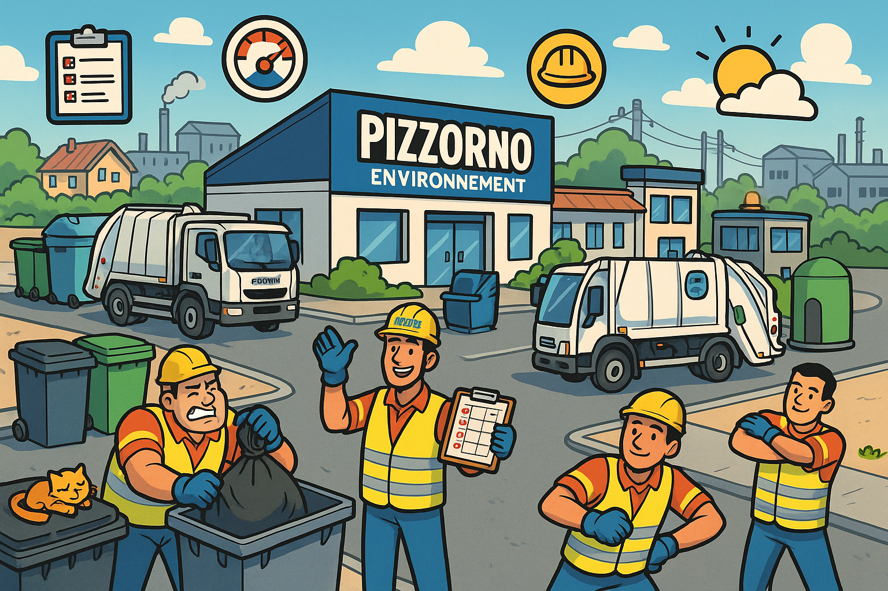
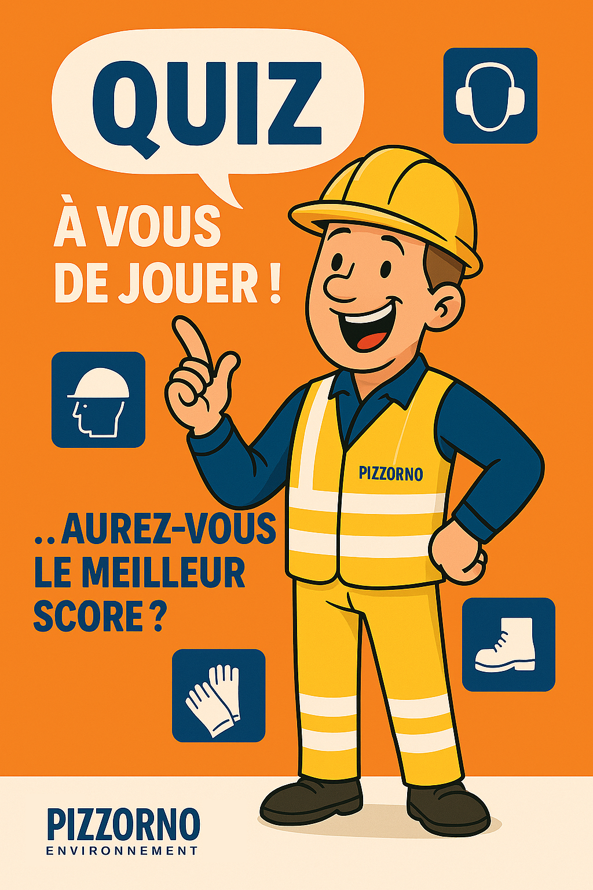
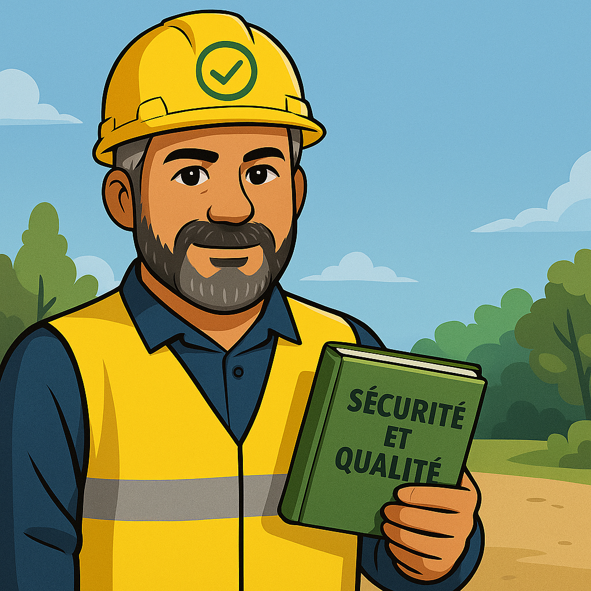

Jeux : Agence Pizzorno Simulator

Choisis un mode pour commencer :
Démarrer
Entrez votre nom :

Démarrer la partie
Jeux sécurité
Démarrer le jeu
Événement
Réputation :
5 / 100

Événement suivant
🔁 Rejouer
Journal de partie
🏆 Tableau des scores
Nom
Score
Médaille